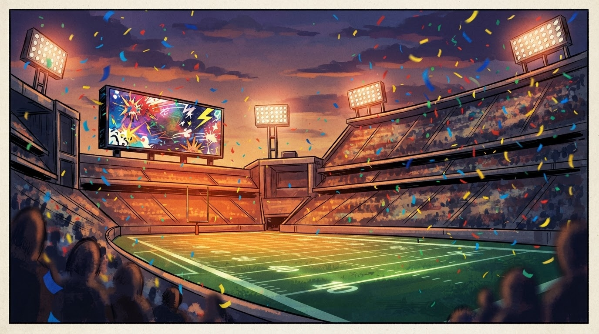
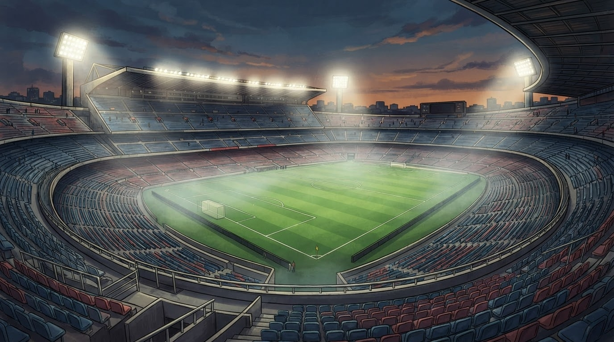

Sport
Gazeta Satirike e Kosovës dhe Shqipërisë — lajme që nuk duhet t'i besoni, por i lexoni gjithsesi
Derbi verior mbaron me një ekip me lojtarë më pak dhe një stadium me tifozë më pak — redaksia jonë llogarit se kush u zbraz më shpejt, fusha apo tribuna.

Në javën e katërt të Abissnet Superiore, Laçi fitoi ndeshjen ndaj Vllaznisë në një fund kaotik, me një karton të kuq dhe boshatisjen e tribunës së stadiumit duke i dhënë sfidës një përfundim të pazakontë.
Burimi: Panorama Sport — 13 shtator 2026
Sipas burimeve tona nga tribuna e Shkodrës (një roje parkingu dhe një shitës fistiku që kishte parashikuar rezultatin nga era e erës), ndeshja arriti një pikë kaq dramatike sa vetë karriget vendosën të votojnë me këmbë — drejt daljes.
Departamenti ynë i statistikave stadiumore (një sfaqe e çarë dhe një kronometer që ndalon vetëm kur i pëlqen) llogarit se numri i tifozëve që u larguan para fundit tejkaloi numrin e golave të shënuar, çka sipas formulës sonë të testuar e bën këtë "fitore morale të daljes së organizuar".
"Ne s'e braktisim ekipin, thjesht e mbështesim nga parkimi — aty ka më shumë vend dhe më pak nerva." — një tifoz duke ecur me shpejtësi drejt makinës, pa u kthyer prapa
Analistët tanë (një dylbi e thyer dhe një bileta e vjetër e ruajtur si kujtim) vlerësojnë se me këtë ritëm largimi, brenda pak sezoneve, stadiumet do të kenë më shumë staf sigurie sesa spektatorë të mbetur deri në fund.
Ndërkohë, federata njofton se po studion mundësinë e një çmimi të veçantë "Tifozi që qëndroi deri në fund" — për ata pak trima që besuan te koha e shtuar më shumë sesa te logjika.
Deri në derbin e ardhshëm, redaksia jonë do të vazhdojë të mbajë evidencën e vet: jo në gola, por në minuta që i duhen një tribune për të vendosur se ka parë mjaft.